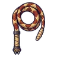

งูหางกระดิ่งหินแดง
มอนธาตุพิษ Lv 55–78
เจอที่
| แมพ | โซน | Lv | ภูมิภาค |
|---|---|---|---|
| รางร่อนทองร้าง | รางน้ำไม้ยักษ์ | 55–78 | แดนใต้สีแดง |
ค่าสถานะตามเลเวล
| Lv | HP | ATK | DEF | MDEF | EXP | Job |
|---|---|---|---|---|---|---|
| 55 | 15,885 | 112–168 | 22 | 10 | 70 | 53 |
| 66 | 26,164 | 136–205 | 26 | 12 | 82 | 62 |
| 78 | 42,042 | 167–251 | 31 | 14 | 96 | 72 |
ตีด้วยธาตุไหนดี
แรงขึ้น: —
เบาลง: มืด ×0.5 อมตะ ×0.5 พิษ ×0
วัตถุดิบที่ดรอป
| ของ | โอกาส | |
|---|---|---|
| กระดิ่งหางงู | 55% | 1 ชิ้น (15% ได้ 2) |
อุปกรณ์ที่ดรอป (1)
| ของ | โอกาส |
|---|---|
 แส้งูหางกระดิ่ง | 0.25% |
สกิล
หอนเรียกฝูง (Lv 25+) · หอนเรียกฝูง (Lv 60+) · กระโจน (Lv 60+)